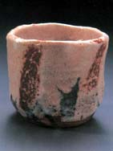
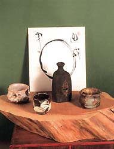
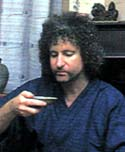

| Robert Yellin
Ode to Japanese Pottery, Sake Cups and Flasks
Review by Steven Goldate
|
Having known Robert Yellin through his website on Japanese
ceramics e-yakimono.net
for some time now, I eagerly awaited the arrival of his hot-off-the-press
book Ode
to Japanese Pottery. I was not disappointed. On
opening the package, an enticing setting of sake cup and bottle
peered at me through Japanese rice paper wrapping promising
more treats inside.
There are various books on the Japanese tea ceremony and
its associated ceramic utensils, but not many on ceramics
made for storing and drinking that other equally, if not more
popular Japanese brew, sake. Yellin's book redresses this
void by taking us on a journey through the world of Japanese
pottery via the ceramic sake utensil.
|
After moving to Japan in 1984, Yellin became a collector
of sake cups and flasks. His first cup cost around $3, but
as his appreciation of Japanese pottery grew, more expensive
ones followed. In the process, Yellin became a serious collector
and connoisseur of Japanese pottery in general and 'guinomi'
(sake cups) and 'tokkuri' (sake flasks) in particular.
While the focus of this book is on sake cups and flasks,
it is by no means limited to that topic. Its sixteen chapters
range from Japanese cuisine and associated pottery to Zen
and nature. Shino, Bizen, Tokoname and many other regional
styles are covered with the help of entries on particularly
noteworthy potters and high quality images illustrating their
guinomi and tokkuri. |

|
|  |
There are too many potters featured to mention all of
them, but amongst them you will find many familiar names such
as Suzuki Goro, Fujiwara Ken, Otani Shiro, Kanzaki Shiho and
many others. Yellin also recognizes the contribution of foreign
potters inspired by the Japanese aesthetic, with the inclusion
of Americans Jeff Shapiro and Richard Bennett and Korean Chi
Soon Taek (1912-1993). There are also chapters devoted to
individual potters, notably Furutani Michio and Okuiso Eiroku.
Individual entries in this book are devoted to particular
images of a cup or flask, analyzing their history and merits
and saying a few words about the maker. Techniques are also
covered, from 'neriage' (a Japanese marbling technique) to
'mentori' (giving shape by cutting and trimming). |
Yellin
also speaks of his personal relationship to particular bowls, and
describes how he has become 'acquainted' with certain potters by
using their bowls, although never having physically met them. This
book too, reveals something of Yellin's own personality. Be it through
his descriptions or interpretations of yakimono, his musings on
philosophy and spirituality in Japan and his own personal journey
there, or his lament of a rapidly changing Japanese society, the
author establishes an intimate relationship with the reader.
Actually, I don't know how Yellin manages to pack so much information
into a book of this size. It reminds me of what an old school teacher
of mine used to say about essays. Some have too much waffle and
not many raisins. Ode to Japanese Pottery is all raisins!
Ode to Japanese Pottery. ISBN: 4-907731-05-1. More
info. Images © Robert Yellin 2004.
More book reviews
More articles
|